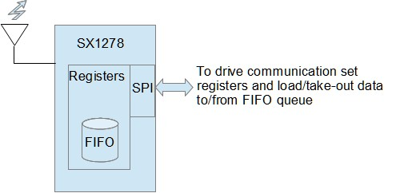
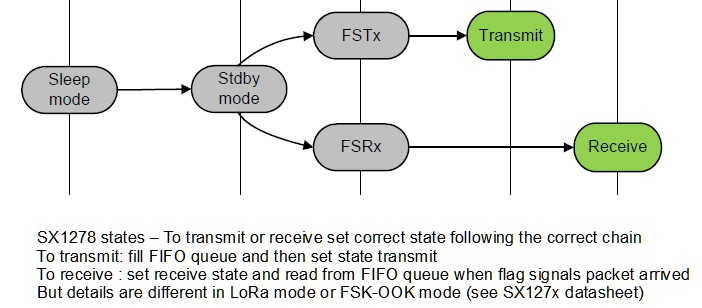

|
Base library with SX1278 functions.
Shield and SX1278 CI uses SPI bus. So this library uses SPI library for
SX1278 commands and data sending/receiving.
Look out! For this reason Arduino pins 13(sck),12(miso),11(mosi) are used by
this shield.
In addition, pin for CS (chip select) is used. This pin can by selected
between 10 and 8. But this library uses pin 10 by default. Change define in SX1278.h file if you decide to use pin 8.
Another Arduino pin is used for reset: 5 or 7. Library uses 5 by default.
Change define in SX1278.h file if you decide to use pin 7.
Not all functionalities are interpreted by this library. But, in any case,
basic functions to display or to set every register, are provided.


General Functions :
- /*Initialize SPI and reset SX1278.
It returns false if shield is not available. Set default power to 10dBm (code 2)*/
bool begin()
void restart();
- /* Start SX1278 in LORA way */
void startModeLORA();
/* Start SX1278 in standard way (FSK or OOK) */
void startModeFSKOOK();
/* 0:FSKOOK 1:LORA */
int readMode();
- /* Set frequence in Mhz (SX12878 : 137-525 Mhz) (ex.: 433.92) (def.: 434.0)*/
void setFreq(float freq);
float readFreq();
- /* Set/get transmit power; pw can be:
1 (7dBm=5mW), 2 (10dBm=10mW), 3 (13dBm=20mW),
4 (17dBm=50mW), 5 (20dBm=100mW)*/
void setPower(byte pw);
/* Format: 0 means code, 1 means dBm, 2 means mW */
byte getPower(byte format);
- /* Set/read operative state:
if FSKOOK: 0=SLEEP 1=STBY 2=FSTX 3=Tx 4=FSRX 5=RX
if LORA : 0=SLEEP 1=STBY 2=FSTX 3=Tx 4=FSRX 5=RXCONT 6=RXSING 7=CAD */
void setState(unsigned char s);
int readState();
- /* Set io pin function (DI0 to DI5)
nio: 0 to 5 val: 0 to 3 (default: all 0)
See SX1278 datasheet for details:
- see tab. 30 for OOK/FSK packet mode;
- see tab. 29 for OOK/FSK continuous mode;
- see tab. 18 for LoRa mode */
void setIOpin(byte nio,byte val);
LoRa mode functions:
- /* load FIFO whith data to send (LORA mode) */
void setLoraDataToSend(byte data[],byte datalen);
- /* read received bytes into buff */
int readLoraData(byte buff[], byte blen);
/* discard received bytes */
void discardLoraRx();
- /* Set Spreading Factor code. Spr.Factor values: 6,7,8,9,10,11,12 (def.: 7)*/
void setLoraSprFactor(byte spf);
byte getLoraSprFactor();
- /* Set Banwidth (from 7.8 kHz to 500 kHz). Code: from 0 to 9 (def.: 7=125 kHz)*/
void setLoraBw(byte code);
byte getLoraBw();
- /* Set Coding Rate. Values 1=4/5, 2=4/6, 3=4/7, 4=4/8 (def.: 1) */
void setLoraCr(byte cr);
byte getLoraCr();
- /* Set Preamble length.Value: from 4 to 1024 (def. 12) */
void setLoraPreambleLen(unsigned int len);
unsigned int getLoraPreambleLen();
- /* Set on/off automatic payload CRC computation/detection (def.: off)*/
void setLoraCrc(byte yesno);
- /* Symbol rate computation. Approximate value based on Spr and Bw*/
float getSRate();
- /* Get LORA flags:
RxTimeout 7, RxDone 6, PayloadCrcError 5, ValidHeader 4,
TxDone 3, CadDone 2, FhssChangeChannel 1, CadDetected 0 */
bool getLoraFlag(byte flag);
/* reset LORA flag */
void clearLoraFlag(byte flag);
/* reset all LORA flags */
void clearAllLoraFlag();
/* get LORA flags for timeout or rx done
It returns 0 if nothing, 1 if packet received, -1 if timeout */
int getLoraRxEndFlag();
- /* Set timeout in terms of symbols (bytes) (def 100).
So timeout in terms of milliseconds depends on Symbols Rate */
void setLoraRxByteTout(int nbyte);
/* Set timeout for data receiving (LORA mode) (def.: 100 symbols)
rough conversion is made. So, timeout can be espressed in seconds.milliseconds
(def.: 0.1Sec)*/
void setLoraRxTimeout(float sec);
/* In bytes (symbols) */
int getLoraRxByteTout();
/* In milliseconds */
float getLoraRxTimeout();
- /* RSSI and SNR estmate */
int lastLoraPacketRssi();
int lastLoraPacketSnr();
int getLoraRssi();
FSK-OOK mode functions:
- /* When in no-LoRa mode, this function decides if FSK (0) or OOK (1) modulation */
void setModulation(unsigned char mod);
int readModulation();
- /* Set bit rate (BPS) (mode FSKOOK) (def.: 4800)*/
void setBPS(int bps);
unsigned int readBPS();
- /* Set/reset (1/0) Packet mode (def. packet)*/
void setPackNoPack(byte yesno);
- /* set preamble length (mode FSKOOK) (def.:3) (def. preamble chars: 0xAA) */
void setPreamble(unsigned int len, byte type);
- /* Set sync bytes (address):
on/off (def. on), sync bytes (def: 3=0x01,0x01,0x01), val can be null if len=0*/
void setSync(byte on,byte val[],byte len);
- /* Set packet format:
fix/var 0/1(def.: fix), nocrc/crc 0/1(def.: crc), payload length (def.: 1(min)) */
void setPacket(byte variable,byte crc,byte len);
- /* Get register flags 1 or 2 */
byte getFlags(byte nFreg);
/* Get/reset single flag n of flag register 1 or 2 */
byte getFlag(byte nFreg, byte nFlag);
void resetFlag(byte nFreg, byte nFlag);
- /* Load FIFO with data to transmit (mode FSKOOK)*/
void dataToSend(byte data[],int len);
- /* Return payload length if arrived or 0 if not */
byte dataAvailable();
/* Read payload bytes into buffer data with max len length */
byte dataReceived(byte data[],int len);
/* Discard payload without saving it */
void fifoDiscard();
- /* Set/read FIFO threshold if you use FifoLevel flag */
void setFIFOthr(byte nb);
byte readFIFOthr();
- /* Set sampling rate for RSSI average value estimate (def:2->8 samples).
val is power of two +1 (Ex. 0->2, 1->4, 2->8 ... 7->256)*/
void setRSSIsample(byte val);
float readRSSIval();
/* Set/read RSSI threshold if you use RSSI flag */
void setRSSIthr(int dBm);
float readRSSIthr();
- /* OOK threshold mode: ty=0 fixed, ty=1 peak (def), ty=2 average */
void setOOKthrMode(byte ty);
void setOOKbaseThr(int thr);
float readOOKbaseThr();
/* OOK threshold trimming: val=0-:-7 dB=0.5-:-6 */
void setOOKThrStep(byte val);
void setOOKThrDec(byte val);
- /* Bit syncronizer set/disable. In packet mode always enabled by default. */
void setBitSync(byte yesno);
Encryption functions:
- /* Define a 32 bytes key using an integer value (0-65535).
The 32 bytes key will be used by encrypt and decrypt functions */
void createKey(unsigned int keyval);
- /* Encrypt buff (replace each byte) and return the same buffer.
Buffer length must be multiple of 16 bytes. The parameter nbk is the number
of 16 bytes blocks. (I.E. nbk=bufferlen/16)
This function uses a predefined 32 bytes key */
byte* encryptBuff(byte *buff, int nbk);
- /* Decrypt buff (replace each byte) and return the same buffer.
Buffer length must be multiple of 16 bytes. The parameter nbk is the number
of 16 bytes blocks. (I.E. nbk=bufferlen/16)
This function uses a predefined 32 bytes key */
byte* decryptBuff(byte *buff,int nbk);
Utilities (basic functions):
- /* get and set single bit of register (reg: register address, onoff:1/0)*/
void setRegBit(byte reg,byte n,byte onoff);
byte getRegBit(byte reg,byte n);
/* read and set goup of register bits (bst: bit number to start, len: number of bits, val: value copied shifted to bst position)*/
void setRegBits(byte reg,byte val,byte bst, byte len);
byte getRegBits(byte reg,byte bst, byte len);
- /* Return a string rapresentation of register content.
Format: address(hex) -> bin-rappresentation hex-rapresentation */
char* readRegBin(byte reg);
- /* Basic SX1278 register write function */
int SPIwrite(unsigned char address,unsigned char val);
- /* Basic SX1278 register read function */
int SPIread(unsigned char address);
|
|
General Functions
LoRa Mode Functions
FSK-OOK Mode Functions
Encryption Functions
Utilities (basic)
Examples
|